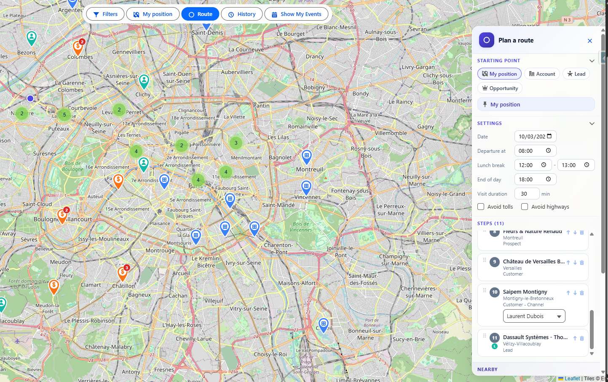

RouteForce User Guide
Version: March 2026
Audience: Sales reps, field users, managers
Applies to: RouteForce for Salesforce
RouteForce helps you visualize accounts on a map, filter territory data, build optimized routes, create visits, and keep a usable route history without leaving Salesforce.
1. Open RouteForce
- Open the App Launcher in Salesforce.
- Search for RouteForce.
- Open the app.
- Wait for the map to load your geocoded records.

What you see on screen
| Area | Purpose |
|---|---|
| Filter panel | Show only the records you want to work with |
| Map | Visualize Accounts, Leads, Opportunities, and Events |
| Route panel | Build, optimize, and export a route |
| Events area | Load visits from your calendar |
| History panel | Reuse or delete previous routes |
Main tabs
- RouteForce — live map and planning workspace
- Route History — previously saved routes
- Saved Filters — reusable filter presets
- Visit Reports — check-in outcomes
- Configuration — admin-only setup area
2. Use the map
RouteForce displays records with valid geolocation directly on an interactive map.
Map controls
| Control | What it does |
|---|---|
| Zoom + / - | Zoom in or out |
| Fullscreen | Expand the map |
| My Location | Center on your current GPS position |
| Basemap selector | Switch between map styles |
| Scale | Show approximate distance |
Marker types
| Marker family | Meaning |
|---|---|
| Blue tones | Accounts |
| Teal / green tones | Leads |
| Orange / red tones | Opportunities |
| Calendar marker | Events |
Useful behavior
- Nearby markers group into clusters.
- The legend updates automatically based on the current display mode.
- Clicking a marker opens a popup with quick actions.
3. Filter records
Use the filter panel to focus on the right territory, segment, or visit list.

Common filters
- My Accounts
- Radius from center
- Record Type
- Last visit
- Industry / Type / Rating / Ownership
- Lead or Opportunity picklist filters when enabled
Tips
- Some filters support multi-select checkboxes.
- After changing filters, click Apply.
- Save useful combinations to avoid rebuilding them later.
4. Save and reload filter presets
Save a filter
- Configure the map exactly how you want it.
- In Saved Filters, click Save.
- Enter a clear name.
- Confirm.
Reload a filter
- Open the saved filter dropdown.
- Select a saved preset.
- RouteForce reapplies the full configuration.
Delete a filter
- Select the saved filter.
- Click Delete.
- Confirm.
5. Review events and agenda
RouteForce can display your Salesforce Events directly on the map.

Load events
- Open the Events panel.
- Choose a date range.
- Click Load.
Event states
- Blue marker — planned event
- Grey marker with check state — checked-in event
Event popup actions
- Open the related record
- Review the planned time slot
- Launch Check In when the visit happens
6. Build a route
Open the route panel to prepare a field day.

Choose a starting point
You can start from:
- My Position
- An Account
- A Lead
- An Opportunity
Add stops
With the route panel open, click markers on the map to add them as route steps.
Each step shows:
- sequence number
- record name
- city
- record type
Reorder or remove stops
- Drag and drop steps
- Use move arrows if available
- Click the trash icon to remove a stop
Route settings
Typical route settings include:
- route date
- departure time
- lunch break
- end of day
- visit duration
- avoid tolls
- avoid highways
7. Optimize the route
When you have at least two stops and a starting point, click Optimize.

What RouteForce does
- reorders stops for a more efficient trip
- draws the route on the map
- calculates distance and travel time
- estimates arrival times
- respects lunch break and end-of-day logic
Important limit
- Maximum supported route size: 50 stops
After optimization
You can still:
- manually adjust steps
- add or remove a stop
- optimize again
8. Add nearby visits
When a route exists, RouteForce can suggest nearby records around the route path.

Each nearby item can show:
- record name
- object type
- distance from the route
- add button to insert it as a stop
This is useful for opportunistic visits.
9. Export and create visits
After optimization, RouteForce can help you operationalize the route.
Google Maps export
Use Google Maps to open the trip in a navigation-friendly format.
CSV export
Use Export CSV to download route details such as:
- stop number
- account / record name
- city
- arrival time
- assigned contact
- distance and duration
Create Salesforce Events
Use Create Visits to generate Events for the route steps automatically.
Typical event data includes:
- subject
- start and end time
- related record
10. Check in after a visit
Use check-in to confirm the visit happened and log the outcome.

Check-in flow
- Open an event marker or event popup.
- Click Check In.
- Select the result.
- Enter notes.
- Confirm.
This creates a Visit Report linked to the related record.
Depending on your setup, you may also see:
- Quick Text snippets
- additional notes fields
- visit outcome options such as success, callback, or not home
11. Reuse route history
Route history helps you repeat a working territory plan.

Each saved route can include:
- route name
- creation date
- stop count
- total distance
- total duration
- optimized status
Common actions
- Reload a previous route
- Delete an obsolete route
- use a past route as a template for a new day
12. Additional interface examples
These screenshots can help users recognize alternate UI states they may encounter.


13. Mobile usage
RouteForce works in Salesforce Mobile.
On mobile
- the filter panel becomes a slide-out panel
- the route panel uses more screen width
- the map supports pinch and drag gestures
- action buttons stay touch-friendly
14. Troubleshooting
| Issue | What to check |
|---|---|
| No markers on the map | The records must have latitude / longitude data |
| Map does not load | Ask your admin to verify licence and remote access settings |
| Optimization fails | Reduce the number of stops and retry |
| Events do not appear | Check the selected date range and your Salesforce Events |
| Check-in is unavailable | Your admin may have disabled Events or Visit Reports |
| CSV export is empty | Optimize the route first |
15. Best practices
- Save filters for recurring territories.
- Keep routes realistic instead of overloading one day.
- Use nearby suggestions after optimization, not before.
- Check in as soon as the visit is completed.
- Reuse route history for repeat rounds.
Support
If something still looks wrong, contact your Salesforce administrator or the RouteForce support contact configured in your org.